In this writing, I want to share how building my first Fabric App with the new Rayfin CLI turned an idea I had been carrying as a browser tool into something that lives inside my Fabric workspace, reads a live semantic model, and ships with one command.
My plan was deliberate. Fabric Apps and the Rayfin toolchain entered public preview at Microsoft Build, announced on June 2, 2026 in the Introducing Rayfin announcement, framed there as an open-source SDK and CLI that lets developers and coding agents define and deploy a complete application backend in code. I wanted to build one thing with it: an app that reads the metadata, relationships, and DAX measures of a semantic model in my workspace and shows me an analysis report. That is a job I already do by hand, so it was the right first target.
What I did not have a feel for yet was how short the path from a New item dialog to a deployed, governed app would actually be.
1. The Setting That Had to Be Switched On First
Nothing about Fabric Apps shows up until a tenant administrator turns it on. The Tenant admin settings section of the Fabric Apps overview spells out the steps: open the Fabric admin portal, go to Tenant settings, and enable the Fabric Apps preview. In my admin portal the toggle reads "Enable Fabric App Items (preview)," and I enabled it for the entire organization.
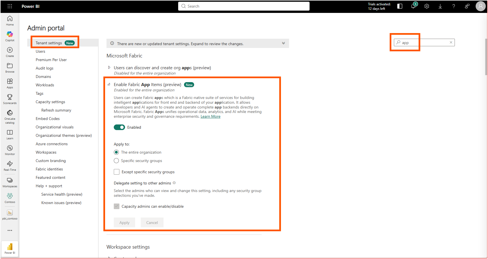
A few minutes later the new item type appeared. In my Contoso workspace I chose New item, searched for "app," and there it was: App (preview), described as a way to build modern cloud apps that scale on an intelligent, fully managed database.
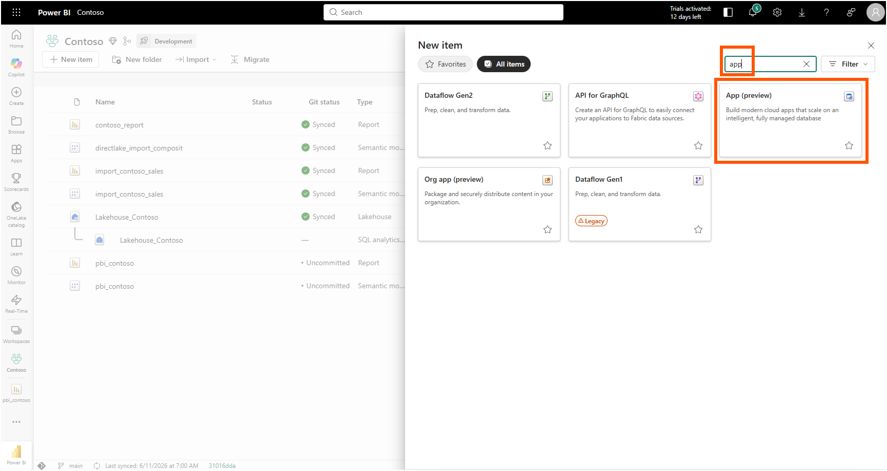
I named it contoso_fabric_app, kept the location on my Contoso workspace, and selected Create.
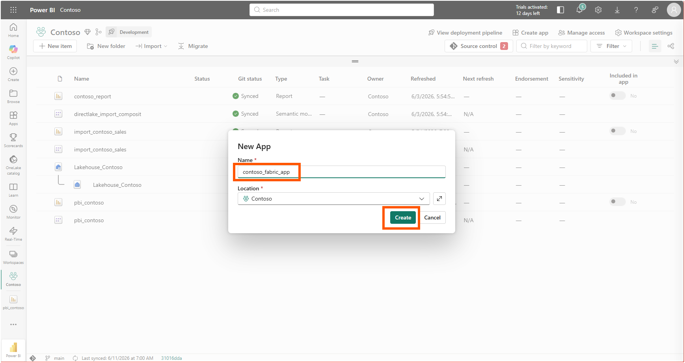
2. One Command, and an Invitation to an AI Agent
The app item opened on a Getting Started screen with four steps: open a terminal, scaffold the project, edit it locally, and publish. The scaffolding step is a single line, exactly the command the Step 1: Create a new project section of the Rayfin CLI tutorial documents, pre-filled with my app name and workspace.
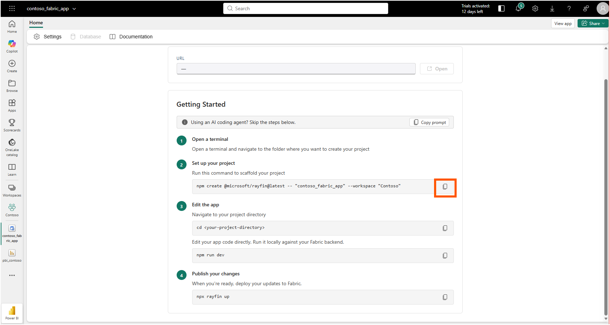
One detail at the top of that screen told me where this product is aimed. A banner read "Using an AI coding agent? Skip the steps below," with a Copy prompt button next to it. The whole workflow assumes a coding agent might be the one running it, which matches how the announcement describes coding agents driving the build end to end.
I opened the folder in VS Code and ran the scaffold command in the terminal.
npm create @microsoft/rayfin@latest -- "contoso_fabric_app" --workspace "Contoso"The CLI installed @microsoft/create-rayfin, resolved my Contoso workspace by its GUID, found the contoso_fabric_app backend item it would hydrate, and then asked how I wanted to start: from a built-in template, from an external git template, or from scratch.
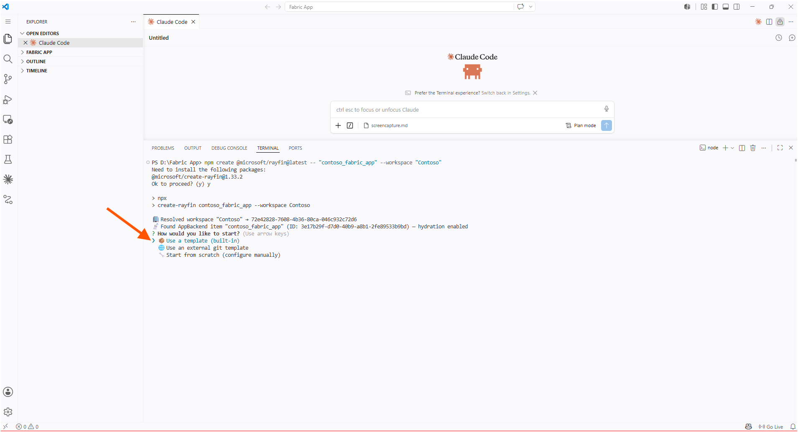
I picked the built-in templates, and the choices made the intent obvious. There was a Blank App, two flavors of Todo app, and the one I wanted: a Data App, described as building a data analytics app based on your data in Fabric. I chose that one.
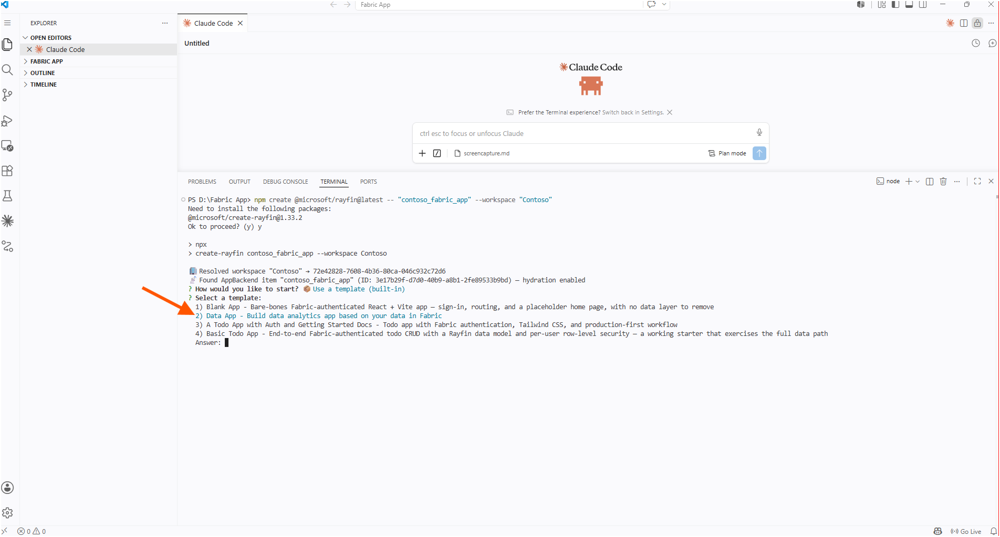
The project scaffolded successfully, and the CLI printed the next steps: change into the folder and start the dev server.
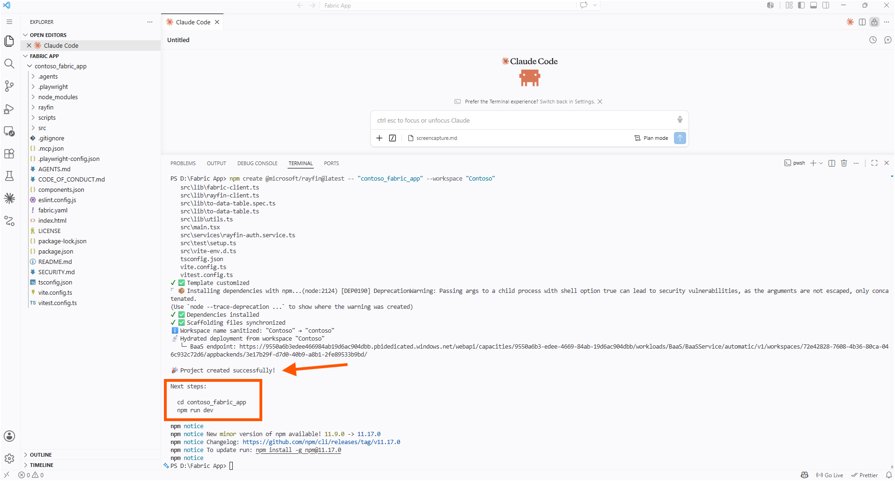
3. Handing the Plan to Claude
A template is a starting point, not the app. The Data App template gave me a React and Vite frontend wired to a Rayfin backend, but it did not know anything about semantic models. So I described what I actually wanted to Claude (AI), in plan mode, and asked it to ground itself first: learn how to build a Fabric App from the Microsoft documentation and the Rayfin open source, then plan an app that analyzes the metadata, relationships, and DAX measures of a selected semantic model in the workspace and visualizes the analysis as a report.
Claude came back with a plan titled Semantic Model Analyzer, built on the Rayfin data-app template, and a task list to match.
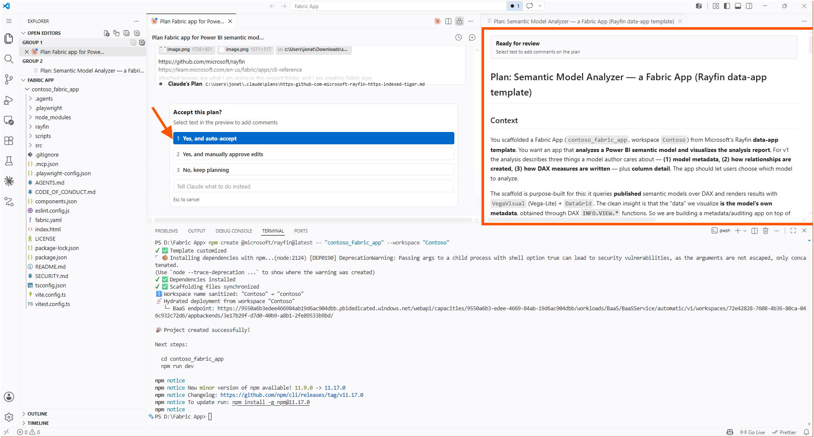
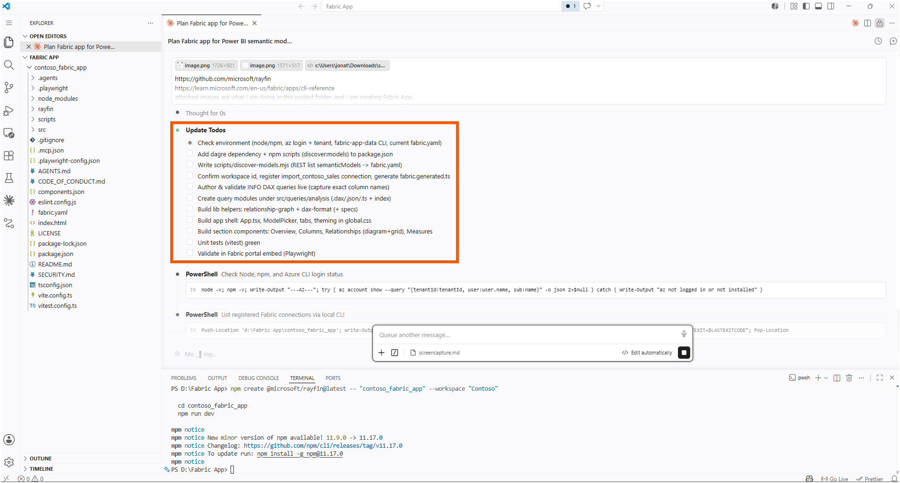
The structure it produced followed the shape the documentation describes for Fabric Apps. The Step 2: Review the generated project section lays out where things live: a rayfin/rayfin.yml for services and deployment settings, a rayfin/data/ folder for the data model, and the frontend in the project root.
4. Running It Local, Then Deploying It to the Workspace
Local iteration is one command. I changed into the project folder and started the dev server.
cd contoso_fabric_app
npm run devThe script detected the Rayfin project root, wrote a local environment file, and brought Vite up on http://localhost:5173/. The Step 3: Run the app locally section describes this command as starting the frontend dev server while the backend runs against Fabric, so I was editing on my machine with the backend already wired to Fabric.
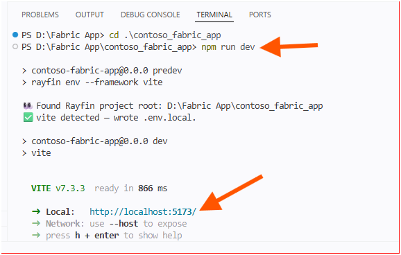
When the analyzer worked the way I wanted on localhost, I deployed it.
npx rayfin upThe CLI found the project root, read the project name from rayfin.yml, recognized that the contoso_fabric_app item already existed, and ran a redeployment against the Fabric API, targeting my tenant, workspace, and item, and printing the workload endpoint at the end. The How it works section of the overview explains what that one command sets in motion: based on the rayfin.yml configuration, Fabric creates the child services that make up the backend, and they appear as child items under the app.
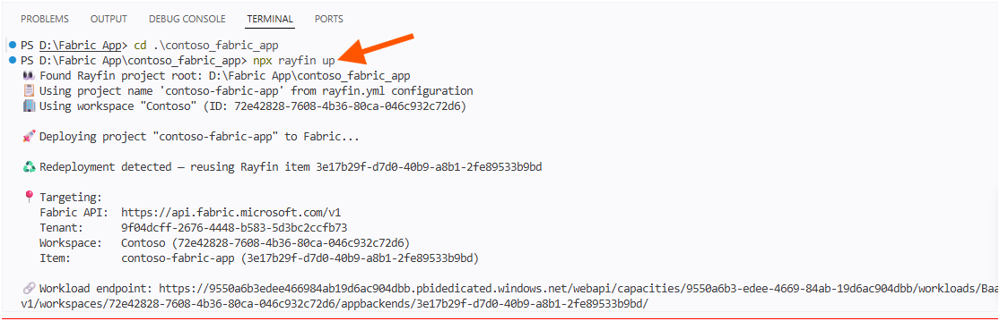
5. Reading My Own Model Back
Then the part I had been building toward. The deployed app opened in the Fabric portal as Semantic Model Analyzer, pointed at my import_contoso_sales model, with an Overview that counted the model back to me: 12 tables, 110 columns, 17 measures, 4 relationships, 53 hidden objects, and 6 calculated items, alongside a breakdown of column data types and visible-versus-hidden columns.
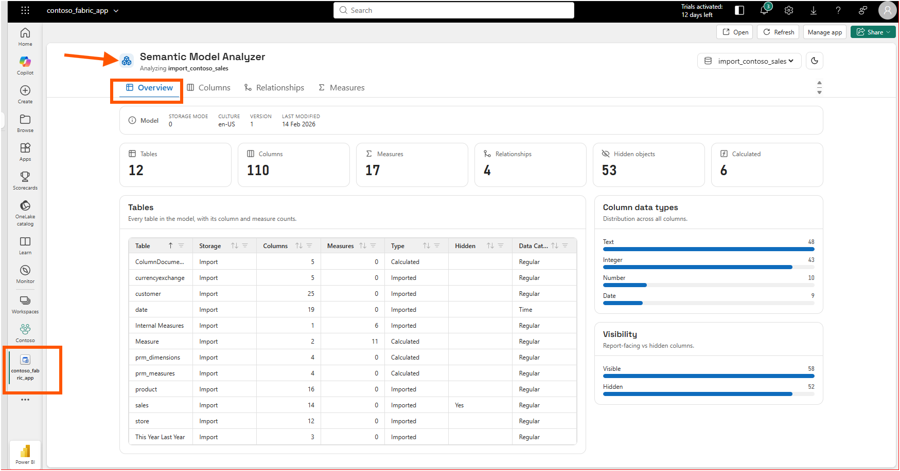
The Relationships tab drew the star schema I know is in that model: the sales fact in the middle, with customer, store, date, and product around it, four active relationships and none inactive.
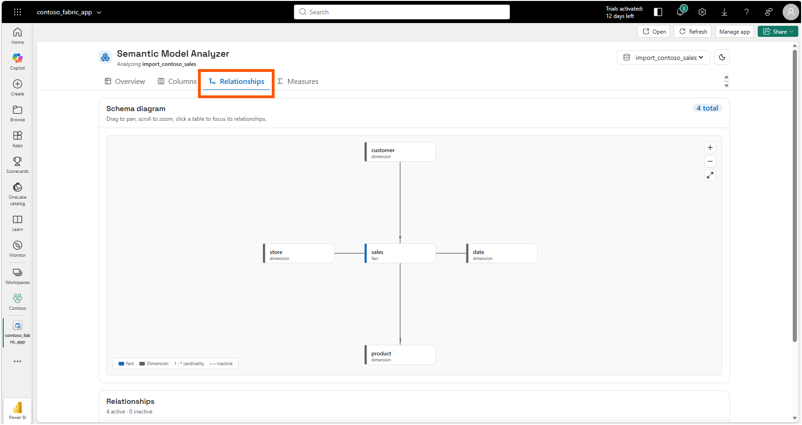
The Measures tab listed all seventeen measures, and selecting one showed its DAX and its description. Number of Customers resolved to DISTINCTCOUNT(sales[CustomerKey]), with the description carried straight through from the model.
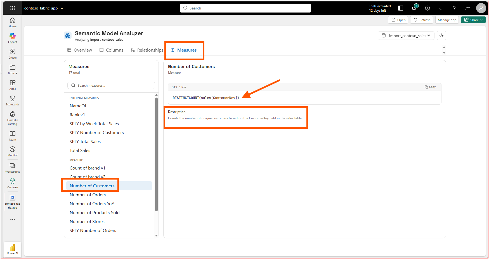
Here is the aha moment that reframed the whole exercise for me: this is the same analysis I publish as a browser-based tool, except now it lives inside the workspace, reads the live model instead of static files, and is governed by Fabric. My PBIP Documenter reads the TMDL and JSON a developer hands it. This app, deployed through Rayfin, is an item in the workspace that any permitted colleague can open against the model that is actually there.
That governance is not something I bolted on. It comes with the platform.
6. From a DevOps Standpoint: The App Is Code, the Backend Is Managed
From a DevOps standpoint, this is foundational, because the entire app is text I can put in source control, and the parts I would normally have to stand up and secure myself are handled by Fabric.
Version Control
The app is just a project folder. When I open it in VS Code I can see the whole thing: the rayfin folder with its configuration, the fabric.yaml file, the src frontend, and the usual package.json, tsconfig.json, and a .gitignore.
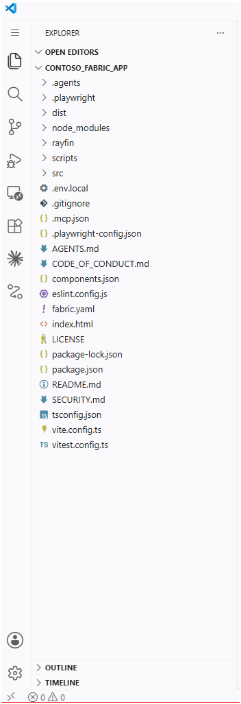
Every one of those files is plain text, so the entire app can go into a Git repository like any other code. The deployment is not a manual click that leaves nothing behind; it is npx rayfin up run against the code I committed.
Automation
Deploying is a single command, so a script or a pipeline can do it instead of a person clicking through screens. Before I deploy, I can run npx rayfin up --dry-run to see what would change without actually changing anything, which the Step 4: Deploy the app to Fabric section of the tutorial shows. And if I only changed the data model, or only the frontend, there are separate commands to push just that part. So I can check first, then deploy only what really changed.
Governance
This is the part I would normally spend days setting up myself. When I deploy, Fabric builds the pieces the app needs for me: a database, an API, sign-in, and web hosting, all listed in the Key features section of the overview. People open the app with their normal Microsoft work account, and to let a colleague in I just give them Run and interact permission, as the overview's item-permissions table explains. The data the app uses sits in OneLake, right next to the rest of my Fabric data. A small analysis app got enterprise sign-in and storage without me building any of it.
7. From Discovery to Open Source
Building this answered a question and immediately raised a better one. I already maintain free, open-source tools that read Power BI Projects from the files a developer exports: Model Lenz for exploring a semantic model, PBIP Documenter for generating documentation, and PBIP Lineage Explorer for tracing how visuals connect back to their fields and measures. They run in the browser, with no installation or sign-up.
What I built here reads the other end of the same pipeline: the live model sitting in the workspace, not the exported files. So the natural next step is to bring the two together. The logic these tools already use to walk a model's tables, columns, measures, and relationships is the same logic a Fabric App could run against the deployed model, with the sign-in and storage handled by the platform. One set of tools reads the source files in the browser; a Fabric App could read the published model inside the workspace. Same analysis, two surfaces.
That is the direction I want to take this next, and I will write it up when I have it working.
A Note on Working with AI
I want to be honest about the division of labor here, because it was not a case of AI doing the whole thing. The domain direction was mine: I decided the app should analyze metadata, relationships, and DAX measures, because that is the analysis I do by hand and the shape of the report I wanted. What Claude did, and did well, was take that direction plus the Rayfin docs and the data-app template and write the React and GraphQL code that turns it into a working app, faster than I would have wired the frontend myself.
Where it needed me was grounding. I asked it to learn the platform from the official documentation and the open source first, rather than guess, and that instruction mattered, because Fabric Apps and Rayfin are days old and the model would otherwise be working from a vague prior. The useful pattern was the same one I keep landing on: I bring the Power BI judgment about what is worth analyzing, the assistant brings the speed of assembling the code, and the documentation keeps it from inventing how the platform behaves.
Closing Thoughts
This experience left me with a new mental model: a Fabric App is not a report, it is an application that happens to live where my data and identity already are, so the analysis I used to ship as a standalone tool can become a governed item in the workspace.
The distance from a New item dialog to a deployed app that reads my own semantic model was a few commands and one good plan. The frontend is mine to design, the backend is managed, and every part of it is code I can review and redeploy. My first Fabric App is still young, and that is exactly why it feels worth pushing further.
I hope this helps having fun in exploring Fabric Apps and the Rayfin CLI, and embracing this new era of building data applications that sit right next to your data!